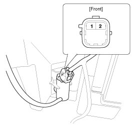
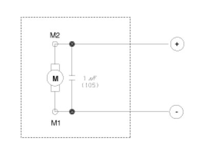
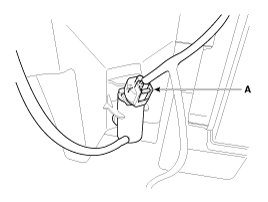
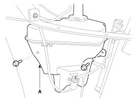

Windshield Washer Motor: Service and Repair
Inspection
1. With the washer motor connected to the reservoir tank, fill the reservoir tank with water.
NOTE:
Before filling the reservoir tank with water, check the filter for foreign material or contamination. if necessary, clean the filter.
2. Connect positive (+) battery cables to terminal 2 and negative (-) battery cables to terminal 1 respectively.
3. Check that the motor operates normally and the washer motor runs and water sprays from the front nozzles.
4. If they are abnormal, replace the washer motor.


Removal
CAUTION:
- When servicing the washer pump, be careful not to damage the washer pump seal.
- Do not operate the washer pump before filling the washer reservoir.
Failure to do so could result in premature pump failure.
1. Disconnect the negative (-) battery terminal.
2. Remove the front bumper.
3. Remove the washer hose and disconnect the washer motor connector (A).

4. Remove the washer reservoir after removing 2 bolts (A).

Installation
1. Install the washer reservoir.
NOTE:
Before installing the pump motor, check the filter for foreign material or contamination. if necessary, clean the filter into the pump motor.
2. Install the washer motor.
3. Install the washer hose.
4. Connect the washer motor connector.
5. Install the front bumper.
6. Check the washer motor operation.